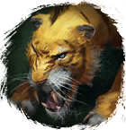
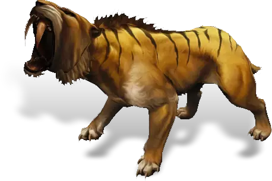

Открыть в интерактивной вики →

| Уровень | лёгк. 75 / норм. 90 / тяжел. 110 |
|---|---|
| Зоны атаки | ближняя, , ментальная |
| Шанс дропа 100% — уровни | лёгк. 1-75 / норм. 1-75 / тяжел. 1-95 |
| Шанс дропа 90% — уровни | лёгк. 76-90 / норм. 76-90 / тяжел. 96-110 |
| Шанс дропа 70% — уровни | лёгк. 91+ / норм. 91+ / тяжел. 111+ |
| Группа боссов | Страх |
| Сила (PvE) | лёгк. 3451 / норм. 5394 / тяжел. 8778 |
| Аспект | Hegun |
| Здоровье | лёгк. 19 000 / норм. 37 000 / тяжел. 66 000 |
| Мана | 3000 |
| Выносливость | 3000 |
Локация
- Червивые пещеры
- Пещера Тигра
Команда

Навыки


Дроп
 Корундовый ингибитор
Корундовый ингибитор  Средняя Фляга Ловкости
Средняя Фляга Ловкости  Средняя Фляга Знания
Средняя Фляга Знания  Средняя Фляга Здоровья
Средняя Фляга Здоровья  Элементарный глиф
Элементарный глиф  Ученический глиф
Ученический глиф 
 Путь страха
Путь страха 

 II-V
II-V  Гроссмейстерский глиф
Гроссмейстерский глиф 
 Даймонит 15
Даймонит 15 | Рары | Синергетики | Эпики | |||
 Рары Рары Рары Рары Рары Рары Рары Рары Рары Рары Рары для питомцев Рары для питомцев | 20-60 ур. |  Эпики Эпики | |||
Прочее:  Путь страха Путь страха  Средняя Фляга Знания Средняя Фляга Знания  Средняя Фляга Здоровья Средняя Фляга Здоровья  Средняя Фляга Ловкости Средняя Фляга Ловкости  Корундовый ингибитор Корундовый ингибитор | |||||
Требования для входа

Путь по картам
Умения
- Укус — обычная атака
 Естественный Иммунитет Естественный Иммунитет — боевой клич, паника
Естественный Иммунитет Естественный Иммунитет — боевой клич, паника
Иммунитеты / особые умения
Иммунитет к обездвиживанию